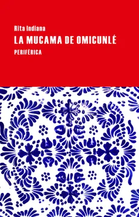

La mucama de Omicunlé
Rita Indiana
De qué trata
Esta apabullante novela, que supone la consagración de Rita Indiana como narradora, tiene tantas capas de lectura y tantos giros fascinantes que rehúye toda síntesis. La historia arranca en el apartamento de la santera y asesora del Presidente dominicano Esther Escudero, llamada también Omicunlé. Su joven mucama está a punto de vivir una historia de pasados, presentes y futuros vertiginosa, en un mundo donde las deidades afroantillanas, la música tradicional y la electrónica, el sexo, los bucaneros del siglo XVII y la contaminación de los mares conviven.
Por qué dialoga con Latinoamérica hoy
Rita Indiana no pide permiso para escribir, mezcla registros políticos, fantásticos y sociales para producir sus novelas. Incorpora el lenguaje, la música y la espiritualidad de la región del Caribe de forma auténtica, escribiendo con la conciencia del territorio que habita. Esta es una obra de ciencia ficción cyberpunk situada en una República Dominicana futura tras una catástrofe ecológica. El sincretismo, fusión de diferentes culturas, es fundamental en la obra de la autora porque funciona como hilo conductor que permite representar la complejidad, la identidad y la historia del Caribe, permitiendo ver la frontera entre lo real y lo fantástico, lo sagrado y lo pagano. De esta forma, reafirma que la identidad de la región es inherentemente diversa y multifacética.